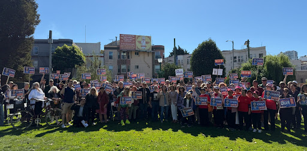

Hi barallies,
There are only 8 days until Election Day. If you haven’t voted yet, or joined us for a volunteer shift yet, now’s the time.
We’ve been in every corner of the city this past week, and the reception has been amazing. San Franciscans are ready to elect a champion of working people to Congress — we just need your help to make sure they vote.

Thank you to everyone who joined us on Saturday to Get-Out-The-Vote in North Beach.
From now until Election Day, we will be phonebanking, canvassing, and doing visibility all across the city.
Morning transit visibility (weekdays, 7:45am-8:45am)
19th and Judah
Geary & Park Presidio
19th and Taraval
Broadway and Columbus
9th and Irving
Castro Station
Haight & Masonic
24th St BART
Geary & Arguello
Phone Banking & Canvassing:
Starting Wednesday 10/28, we will be phonebanking and canvassing out of 55 Fillmore from 10am - 8pm every day until Election Day. Sign up for a shift here!
This election is going to come down to the wire, so every vote counts! See you this week.
In solidarity,
Team Connie